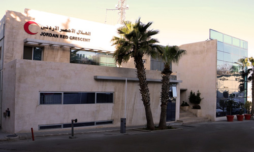

Tkiyet Um Ali receives volunteers from various parts of the Kingdom of different ages and various private, governmental, educational and other sectors every day, eager to do good and provide a helping hand to others. Since 2014, Tkiyet Um Ali has received more than 40,000 volunteers, all of whom have contributed to the support of society in general and members of the families of Tkiyet Um Ali specifically accredited in ways that go beyond food support to include preserving human dignity and helping improve their living conditions and psychological as much as possible. Tkiyet Um Ali focuses on the importance of volunteering in Jordan through its launch of 16 different volunteer programs.
Since Human Relief Foundation first opened our door, and stepped in to the world of humanitarian aid in 1991, we have worked, quietly, tirelessly to relieve the suffering of those whose lives have been blighted by conflict, environmental disaster, and social upheaval
Volunteer Opportunities: Donation, Fundraising, Volunteer, Deployments
The United Nations Voluntary Program encourages voluntary service to support peace and development around the world. The idea of the United Nations Volunteer Program is inspired by the conviction that volunteerism can transform the pace and nature of development, and by the idea that everyone can contribute their time and energy to peace and development. With partners such as UNHCR, the United Nations Volunteer Program encourages volunteer service, integrates it into development planning and mobilizes volunteers.
Volunteer Opportunities: Donation, Fundraising, Volunteer, Deployments
Reclaim Childhood creates safe and inclusive spaces for refugee and local girls in Jordan to thrive by playing sports, working with coaches, and building community.
Volunteer Opportunities: Donation

Name: Jordan National Red Crescent Society Website: www.jnrcs.org
The Jordan National Red Crescent Society Mission is to “alleviate the suffering of the vulnerable groups, victims of armed conflicts and natural disasters and to protect their dignity and rights in a manner that preserves their lives, safety, security and well-being. The Society direction focuses on Strategy 2020 of the International Federation of Red Cross and Red Crescent Societies, which has the strategic aims: To save lives, protect livelihoods, and strengthen recovery from disasters and crisis. To enable healthy and safe living. To promote social inclusion and a culture of non-violence and peace.
Volunteer Opportunities: Donation